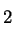

Aliluvut
Ennen kuin aloitat äänitiedoston nimikoinnin, varmista, että ääni
on juuri sen mittainen ja editoitu sellaiseksi kuin haluat. Nimikointia
varten luodaan nimittäin TextGrid-objekti,
jonka on oltava samankestoinen kuin sitä vastaava äänitiedosto.
Jos äänitiedoston kesto myöhemmin muuttuu (esim. päätät poistaa sen
alusta "turhaa tyhjää") ja olet jo aloittanut nimikoinnin,
joudut vaikeuksiin, koska TextGridiin merkitsemäsi segmenttirajat
eivät enää vastaakaan alkuperäisiä aikapisteitä äänisignaalissa. Onkin
sitten hankalampi juttu siirtää segmenttirajat taas oikeisiin paikkoihin...
- Avaa objektilistaan haluamasi äänitiedosto joko Sound-objektina tai
LongSound-objektina 4.3.1. Käytä
LongSound-objektityyppiä (komento Read: Open long sound file...)
siinä tapauksessa, että äänitiedosto on erityisen suuri, eikä mahdu
kerralla tietokoneesi käyttömuistiin. Varmista, että ääniobjekti on
valittuna.
- Paina objektilistan oikeassa laidassa näkyvää painiketta Label
& segment: To TextGrid... Näkyviin tulee lomake (ks. kuva
6.1). Kirjoita ylemmälle riville (Tier
names) välilyönneillä erotettuna nimet niille nimikointikerroksille,
joiden haluat olevan TextGrid-objektissa. Jos kirjoitat vaikkapa "äänteet
sanat lauseet", saat kolme nimikointikerrosta. Voit muuttaa,
lisätä ja poistaa nimiä, kerroksien määrää ja kerrostyyppejä myöhemminkin
(ks. 6.3.3).
- Oletuksena kaikki ylärivillä mainitut nimikointikerrokset luodaan
IntervalTier-tyyppisinä. IntervalTier-kerroksiin
voi nimikoida vain segmenttejä, eli aikavälejä joilla
on alku- ja loppuraja. Jos kuitenkin haluat, että jotkut nimikointikerroksista
ovat tyyppiä PointTier, kirjoita näiden nimet myös alemmalle riville
(Point tiers). PointTier-rivien nimien tulee siis esiintyä molemmissa
kohdissa. PointTier-kerroksiin voi merkitä yksittäisiä
aikapisteitä, joille voi antaa nimiä. Joskus tällaisistakin merkkipaaluista
voi olla iloa.
- Paina OK. Objektilistaan ilmestyy uusi TextGrid-objekti, joka näkyy
valittuna. Nyt voit aloittaa varsinaisen nimikoinnin.
Kuva 6.1:
Tällä lomakkeella voidaan määrittää
uuden TextGrid-objektin nimikointikerrosten nimet ja tyypit.

|
- Valitse objektilistasta samanaikaisesti ääniobjekti (Sound) ja sitä
vastaava TextGrid-objekti, jonka juuri loit. (Voit valita kaksi objektia
yhtä aikaa pitämällä Shift- eli vaihtonäppäintä tai Control-näppäintä
pohjassa, kun naksautat toista objektia.)
- Paina oikealla näkyvää painiketta Edit. Uusi TextGrid-editori-ikkuna
avautuu. Ikkunan yläosaa hallitsee äänisignaalin kuvaus: Ylimpänä
näkyy äänen aaltomuoto eli oskillogrammi, ja sen
alapuolella saattaa olla toinen ikkuna, jossa on äänestä laskettuja
analyysikuvia (esim. spektrogrammi, ks. 7.1).
Äänisignaalikuvien yläpuolella on kapea valkoinen osa, kirjoitustila.
Ikkunan alareunassa näkyy valkoisia palkkeja: ne ovat nimikointirivejä
eli nimikointikerroksia. Aktiivisena
oleva nimikointirivi näkyy keltaisena.
- TextGrid-editorissa voit kuunnella ääntä ja sen pätkiä samalla tavalla
kuin Sound- ja LongSound-editoreissa (ks.5).
Editori-ikkunan alalaidassa (valkoisten nimikointikerrosten tai -rivien
alla) näkyy kaksi tai kolme vaakasuoraa palkkia. Kun painat alinta
palkkia, kuulet koko ääniobjektin sisällön yhtä soittoa. Toiseksi
alin palkki soittaa koko tällä hetkellä näkyvissä olevan osan äänestä
- voit käyttää tätä toimintoa, kun zoomaat äänikuvaa sisään- tai ulospäin
tai vierittelet kuvaa oikealle tai vasemmalle. Kolmesta soittopalkista
ylimmäinen tulee näkyviin, kun naksautat hiirellä johonkin kohtaan
ääniaaltoa tai analyysikuvaa tai kun valitset äänestä alueen vetämällä
hiirellä sen yli. Ylimmällä soittopalkilla voit kuunnella äänestä
minkä tahansa lyhyenkin pätkän, kun muutat välillä kursorin paikkaa
tai valitun alueen sijaintia. Kokeile!
- Kun olet kuuntelemalla ja/tai katselemalla löytänyt kohdan (esim.
lauseen alku), johon haluat tehdä segmenttirajan, naksauta ensin hiirellä
kyseiseen kohtaan ääniaaltoa tai analyysikuvaa ikkunan yläosassa.
Alaosan valkoisiin nimikointikerroksiin (tiers) ilmestyy pystyviiva,
jossa on pieni ympyrä jokaisen nimikointikerroksen yläreunassa. Naksauta
hiirellä tarkasti ympyrään sen nimikointikerroksen kohdalle, johon
haluat lisätä segmenttirajan. Uusi raja tulee näkyviin paksuna pystyviivana.
- Valittuna oleva segmenttiraja näkyy punaisena ja muut rajat sinisinä.
Tietyn rajan voi valita naksauttamalla hiirellä sen päällä.
- Segmenttirajaa voi siirtää oikealle tai vasemmalle tarttumalla siihen
hiirellä (mutta ei viereisten segmenttirajojen yli). Kahta tai useampaa
eri nimikointikerroksissa mutta täsmälleen samassa aikapisteessä olevaa
segmenttirajaa voit siirtää yhtä aikaa pitämällä Shift- eli vaihtonäppäintä
pohjassa ja vetämällä yhtä rajoista.
- Valitun (punaisen) segmenttirajan voi poistaa valitsemalla editori-ikkunan
Point/Boundary-valikosta Remove.
- Jos haluat, että segmenttirajat ovat varmasti täsmälleen samassa aikapisteessä
useammassa nimikointikerroksessa, tartu yhteen rajaan ja vedä se hiirellä
toisessa kerroksessa olevan rajan päälle. Tällöin rajat menevät automaattisesti
samaan aikapisteeseen. (Tätä mahdollisuutta kannattaa käyttää hyväksi,
sillä silmämääräisesti rajoja on vaikea saada täsmälleen samaan kohtaan!)
- Kun lause, äänne tms. yksikkö on rajattu ja haluat antaa segmentille
nimen, naksauta hiirellä haluamallesi nimikointikerrokseen niiden
rajojen väliin, johon haluat kirjoittaa. Kirjoita sitten segmentin
nimi tavalliseen tapaan näppäimistöllä. Teksti tulee samanaikaisesti
näkyviin nimikointikerrokseen segmentin kohdalle ja ikkunan yläreunassa
olevaan valkeaan kirjoitustilaan. (Huom.
Joissakin tapauksissa joudut ensin naksauttamaan ikkunan yläreunan
kirjoitustilaa, ennen kuin pääset kirjoittamaan tekstiä segmenttiin.)
Jo kirjoitettua tekstiä voit muokata normaalisti naksauttamalla ensin
ko. segmenttiä nimikointikerroksessa ja sitten haluttua tekstikohtaa
ikkunan yläosan kirjoitusrivillä.
6.3.3 Nimikointikerroksien
lisääminen ja poistaminen
Tätä osiota ei ole vielä kirjoitettu.
6.3.4 IPA-merkit ja erikoismerkit
Praatissa on oma tapa, jolla saa erikoismerkkejä näkyviin TextGridissä.
Erikoismerkit tuotetaan näppäilemällä peräkkäin \-merkki
ja jotain muita merkkejä. Näin muodostetut merkit näkyvät siis ainoastaan
Praatin TextGrid-ikkunoissa ja Picture-ikkunassa.
Kaikkien Praatissa näkyvien erikoismerkkien
ja IPA-symbolien koodit
näet Praatin sisäisestä manuaalista: Kun olet TextGrid-editori-ikkunassa,
valitse sen oikeasta ylänurkasta Help:About special symbols.
Sivu on hiukan suttuinen, mutta kaikkien merkkikoodien pitäisi löytyä.
Voit myös yrittää käyttää manuaalin hakua (Search manual)
ja antaa hakusanaksi "symbols" tms. (ks. manuaalin
käyttö, 3.3).
Esimerkiksi nuoli ylöspäin syntyy näppäilemällä
peräkkäin \ (loppuun pitää
näppäillä välilyönti, jotta -merkin saa tuotettua).
Nuoli alaspäin taas tulee näkyviin näppäilemällä
peräkkäin merkit \_|
Alleviivauksien tuottaminen
lienee Praatin sisällä mahdotonta. Korvikkeeksi voi keksiä jonkin
oman merkintätavan siihen kohtaan, mistä alleviivaus alkaa, ja siihen,
missä se päättyy. Esim.
näistä sanoista \_tämä\_ on alleviivattu
mikä näkyy TextGridin intervallissa seuraavasti:
näistä sanoista _tämä_ on alleviivattu
Huom. Pelkkä _-merkki Praatissa aiheuttaa seuraavan merkin näkymisen
alaindeksinä, esim. H_2O tuottaa veden kemiallisen
merkin HO. Jos haluaa sen sijaan tuottaa _-merkin,
eteen on laitettava \-merkki (ks. sisäisen manuaalin
sivu Text styles; 3.3).
: 6.4 TextGridin eli nimikointiobjektin
: 6. Nimikointi
: 6.2 Praat-ohjelmalle tyypillisi‰ nimikointiominaisuuksia
Sisältö
Hakemisto
Mietta Lennes
2004-09-13